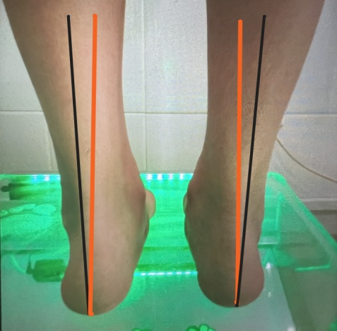
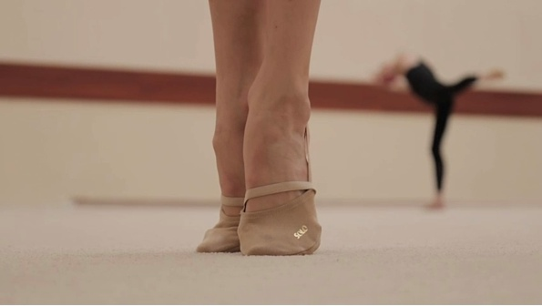
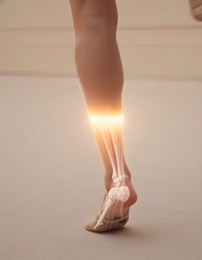
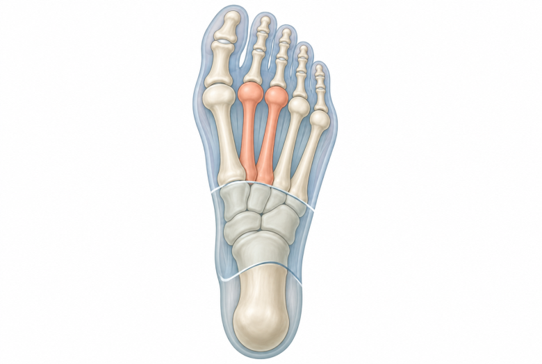
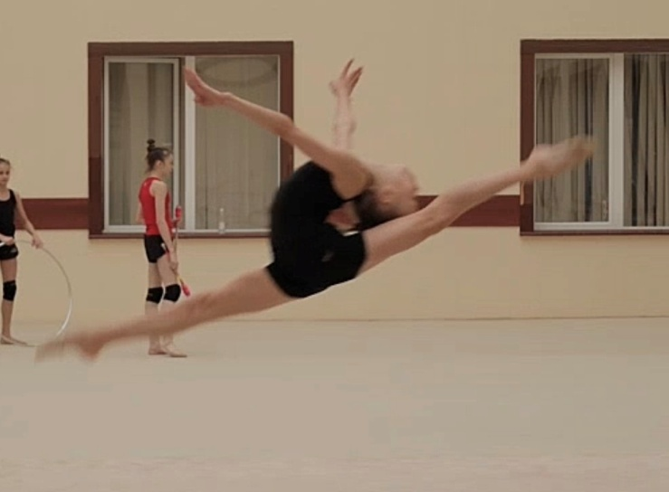
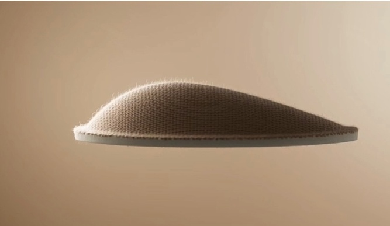
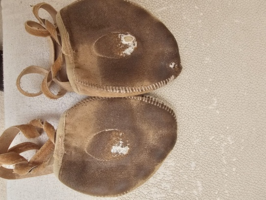

Поддерживает свод стопы
Обеспечивает дополнительную поддержку поперечного свода переднего отдела стопы.
Долгожданная премьера
OB52P OB55P
Технология Smart Pad в новых моделях SOLO — для профессиональных нагрузок, с амортизирующей подушечкой и защитой стопы.

Видео
В художественной гимнастике стопы ежедневно испытывают серьёзные нагрузки. Подъёмы на полупальцы, повороты, прыжки и балансы требуют постоянной работы передней части стопы, на которую приходится значительная часть веса тела.
При многократном повторении этих движений нагрузка может концентрироваться на отдельных участках, вызывая усталость, дискомфорт, болезненные ощущения и перегрузочные повреждения.
Чтобы сделать тренировки комфортнее, SOLO разработала Smart Pad — получешки со встроенной анатомической подушечкой.


Внутри Smart Pad расположена специальная поддерживающая вставка, метатарзальная (анатомическая) подушечка, непосредственно позади головок плюсневых костей.
Она выполняет три основные функции:
Обеспечивает дополнительную поддержку поперечного свода переднего отдела стопы.
Помогает распределять давление на большую площадь, чтобы оно не концентрировалось в нескольких точках.
Способствует уменьшению локального давления в области головок плюсневых костей, особенно второй и третьей.
Проще говоря, подушечка помогает распределять нагрузку на переднюю часть стопы более равномерно, без существенного ограничения её подвижности.
В ходе предварительных наблюдений спортсменки отмечали более комфортную опору, ощущение устойчивости при поворотах и балансах, а также субъективную лёгкость при подъёме на полупальцы.
Эти наблюдения пока не являются подтверждением эффективности изделия в клинических испытаниях, но показывают, какие преимущества может ощущать гимнастка при использовании такой конструкции.
SOLO Smart Pad созданы для дополнительной поддержки переднего отдела стопы и более комфортного выполнения привычных тренировочных элементов.
Материал для тренеров и родителей
Нагрузка, контроль и поддержка переднего отдела — почему это важно для безопасности тренировок и как появился Smart Pad.
Художественная гимнастика — высокотехничный вид спорта, в котором спортсменка многократно выполняет прыжки, повороты, равновесия, наклоны, шпагаты и работу на полупальцах.
Внешне это выглядит как красивое, пластичное движение. Для опорно-двигательного аппарата это сотни повторяющихся циклов: нагрузка, отталкивание, приземление, стабилизация.
Одним из ключевых звеньев является стопа. Она служит опорой и одновременно активным органом движения: отталкивает, амортизирует, стабилизирует и помогает сохранять равновесие.

Если контроль положения стопы или распределение нагрузки нарушены, нагрузка может уходить выше по кинематической цепи — на голеностоп, колено, таз и поясницу. Это не означает, что любая особенность стопы обязательно приводит к травме, но требует внимания при высокой и регулярно повторяющейся нагрузке.

Подъём на полупальцы в хореографии часто называют relevé. Центр давления смещается вперёд, возрастает работа икроножных мышц и ахиллова сухожилия, а опора концентрируется в переднем отделе стопы.
Сам по себе подъём не является опасным движением. Риск возрастает, когда нагрузка превышает возможности организма к восстановлению.
У юных спортсменок организм продолжает расти. Кости, сухожилия и мышцы адаптируются с разной скоростью, поэтому одинаковый объём тренировок может переноситься по-разному даже в одном возрасте.

Пронация — естественное движение стопы, при котором она адаптируется к опоре. Проблема не в самом движении, а в его избыточности либо недостаточном контроле.
Если выворотность создаётся преимущественно за счёт стопы, а не управляется от тазобедренного сустава, пятка и свод могут уходить внутрь. Это меняет направление нагрузки на стопу и голеностоп.
При прыжках, приземлениях, поворотах и удержании равновесия колено работает как звено цепи: стопа — голеностоп — голень — колено — бедро — таз.
Если стопа недостаточно стабильно опирается, а пятка или свод избыточно смещаются внутрь, это может сопровождаться поворотом голени и смещением колена внутрь. Проблема возникает, когда движение повторяется в большом объёме, плохо контролируется или выполняется на фоне утомления.
Для гимнастки это особенно значимо при:

Плюсневые кости особенно нагружаются при отталкивании, прыжках, поворотах и работе на полупальцах. Наиболее часто перегрузка затрагивает II–III плюсневые кости.
Стрессовый перелом — результат накопления микроповреждений, когда повторяющаяся нагрузка превышает способность кости к восстановлению.
Риск связан не только с объёмом нагрузки. Значение имеют восстановление, питание, статус витамина D и кальция по медицинским показаниям, менструальная функция и энергетическая обеспеченность.
Тренер
Тренер не ставит диагноз, но видит спортсменку в движении и может первым заметить изменения.
Избегает подъёма на одну стопу
Теряет прежнюю высоту relevé
Поджимает пальцы из-за дискомфорта
Чаще теряет равновесие
Меняет технику приземления
Просит сократить прыжки
Жалуется на жжение, онемение или точечную боль
«Заваливает» таз или колено уходит внутрь
Родители
Ребёнок редко говорит: «У меня болит плюсневая кость». Чаще родители слышат другое.
«Жжёт под пальцами»
«Мешает что-то внутри»
«Хочется скорее разуться»
«После тренировки больно наступать»
Такие жалобы не следует воспринимать как «лень» или «капризы». При повторяющейся боли, отёке, изменении походки или снижении высоты подъёма нужна очная консультация врача.

Задача специалиста — не запрещать гимнастику, а помогать развиваться безопасно: сохранять гибкость, добавляя силу; сохранять сложность элементов, контролируя нагрузку; сохранять любовь к спорту, не допуская, чтобы боль стала нормой.
150+
спортсменок 6–16 лет: жалобы, ортопедический статус и зоны износа на внутренней поверхности полупальцев легли в основу гипотезы о поддержке переднего отдела стопы
Мы предположили, что поддержка переднего отдела может помочь перераспределить давление и уменьшить локальную перегрузку в области II–III плюсневых костей.
Так появились полупальцы со встроенной метатарзальной подушечкой. Она расположена позади головок плюсневых костей и предназначена для поддержки поперечного свода переднего отдела стопы.
Механизм предполагает увеличение площади контакта и перераспределение давления без существенного ограничения подвижности. Эффект зависит от формы, жёсткости и позиции подушечки.


В предварительных наблюдениях более стабильная опора могла помогать лучше контролировать положение стопы при подъёме на полупальцы, поворотах и удержании равновесия. Подушечка не «исправляет» конечность напрямую — она распределяет нагрузку, что видно и по износу материала.
Большая устойчивость при поворотах и удержании равновесия
Субъективная лёгкость при подъёме на полупальцы
Более уверенный контроль положения тела
Комфорт при выполнении привычных элементов

При индивидуальном подборе специалистом метатарзальная подушечка может изменить характер контакта стопы с опорой и перераспределить давление в переднем отделе.
Метатарзальная подушечка — не «волшебная кнопка» и не пассивный тренажёр мышц. При правильном подборе она может изменить контакт и распределение давления в переднем отделе стопы.
Если спортсменка субъективно чувствует более уверенную опору, это может помочь спокойнее выполнять повороты и удержания равновесия. Но изделие не отменяет работу над техникой, силой мышц ног и таза, координацией и восстановлением.